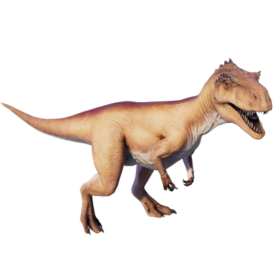

Useful Website
Megalosaurus was one of the first non-flying dinosaurs ever to be discovered, and lived around 155-170m years ago. This carnivorous theropod’s name translates to ‘great lizard’, an apt description for a dinosaur that grows up to 6m in length and can weigh about 700kg. Megalosaurus’ large size, powerful jaw and serrated teeth made it the apex predator of its environment.
